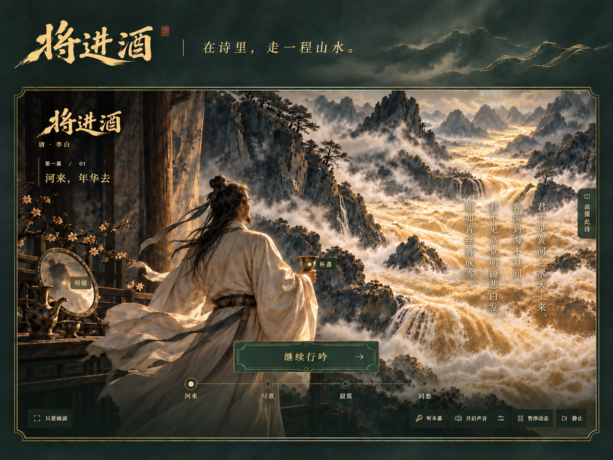
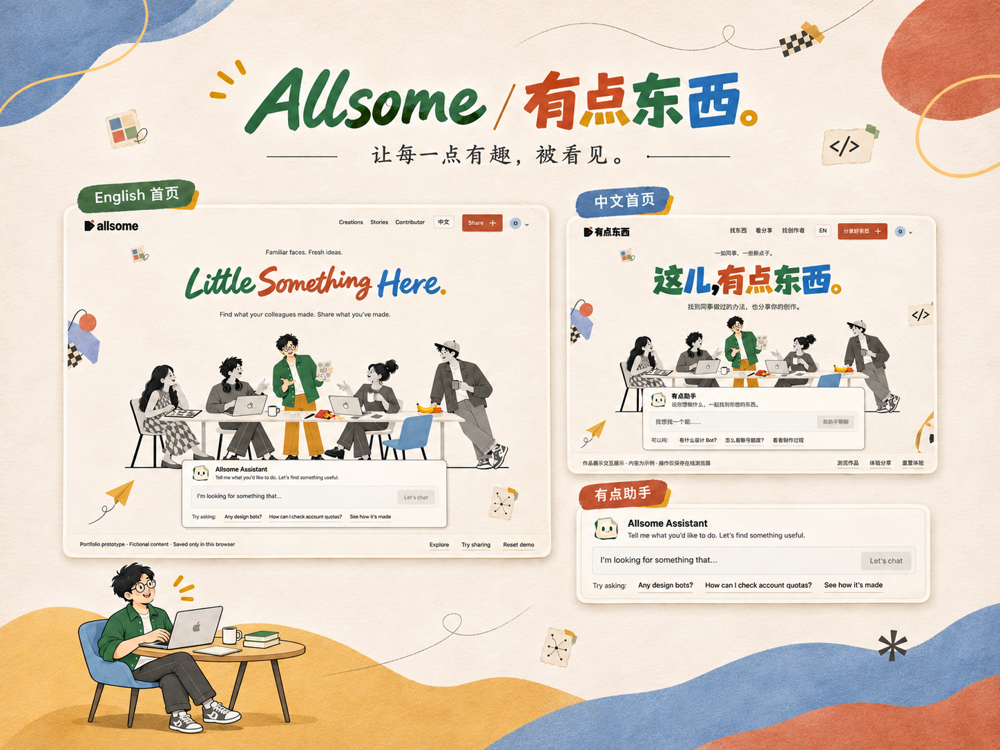
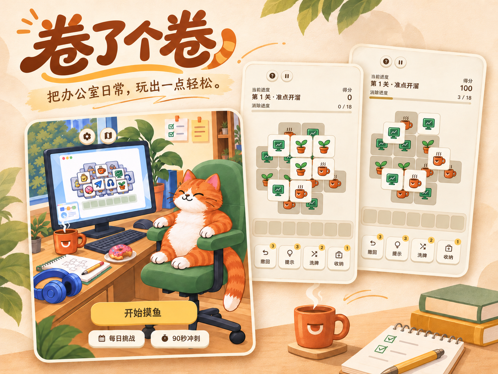
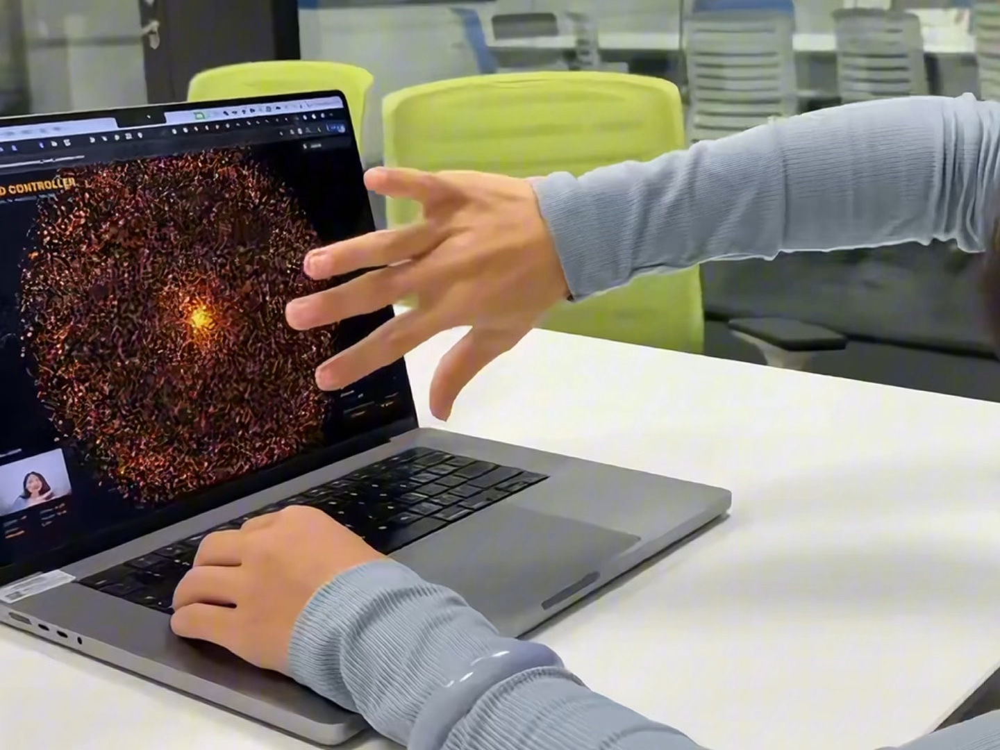

AskAI 运维值班与故障处置平台
让 AI 逐步承接值班工作，让人掌握关键判断
以主设计师身份梳理 AI 值班任务，让专家能够理解、授权、纠正和接管处理过程。

WORK / BY PRACTICE
这里记录我在工程、数据与 AI 产品中的设计工作，也收录借助 AI 完成的个人创作。每个项目都有具体的起因、取舍和当前状态。
初次来访，可以从 Ask · 看 AI 产品设计 或 Space · 看复杂平台设计 开始。
AI PRODUCTS
从 Agent 构建到值班处置，理解 AI 如何进入工作，以及人怎样参与其中。
让 AI 逐步承接值班工作，让人掌握关键判断
以主设计师身份梳理 AI 值班任务，让专家能够理解、授权、纠正和接管处理过程。


把共用的设计系统，延伸到 Agent 业务组件与主题定制
我从设计系统侧指导主题定制，与项目设计师共建业务组件；一线需求与产品页面由项目设计师负责。
COMPLEX PLATFORMS
进入复杂业务，梳理角色、对象与任务，在既有工程条件下改善产品体验。


从具体产品深入全局，建立工程平台的设计基础
从早期产品设计进入工程基础设施，建立领域认识、设计基础与团队接续方式。


在成熟平台上，梳理数据工作的权限、执行与依赖
在已有的数据平台中，从关键产品切入，改善复杂任务并建立专业设计支持。
SYSTEMS & METHODS
把项目经验整理成组件、指南和可继续使用的方法，也观察它们在真实工作中是否适用。

让共用设计基础支持业务差异，并持续吸收使用反馈
主导设计侧建设与升级，与前端共同维护组件、主题和使用指南。

从真实任务出发，让设计判断有依据、可验证
从一次设计系统官网研究出发，记录如何理解真实任务，并把发现带进后续设计。
AI-NATIVE BUILDS
一次聊天、一个兴趣，或身边尚未解决的小问题，都可能成为创作的起点。我从没有编程基础开始，借助 AI 和开源工具，把这些念头做成能打开、能互动的作品，也记录想象与成品之间的差距。

被纪录片导演发起国家公园项目的初心打动，试着把自然影像和第一人称漫游结合，做一片能走进去的雨林。

从同事为孩子制作 AI 教辅工具获得启发，把古诗、朗读、画面与互动组合成四幕诗境。

同事们用 AI 做了许多有趣的小东西。我想给这些作品一个被看见、被交流的地方。

喜欢玩消除游戏，也想做一个自己的版本。在开源项目上，借助 Codex 改造美术、玩法和规则。

借助 Gemini Canvas、Three.js 与 MediaPipe，用手势转动和拉近一颗橙色粒子星球。
DESIGN SNAPSHOTS
六个设计问题，结合原稿与对照理解选择，再进入背后的项目。